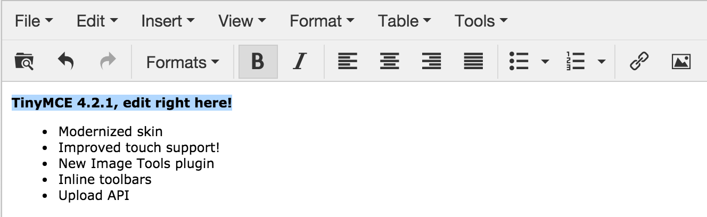
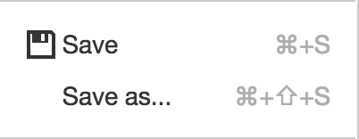
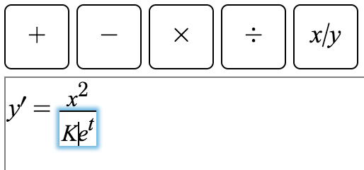
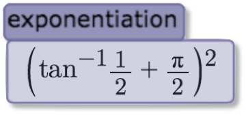
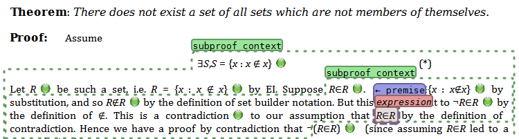
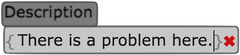

Demo Apps and App Developer Tutorial
Introduction
What can I build with this platform?
The webLurch architecture has three tiers, applications at the top, built on the Lurch Web Platform, which in turn is built on the WYSIWYG editor TinyMCE.
- TinyMCE provides:
- WYSIWYG editing of HTML content
 - Extendability through custom toolbars, menus, dialogs, etc.
- The Lurch Web Platform builds on that foundation, and provides:
- Load/Save functionality into the browser's
LocalStorage
 - A WYSIWYG math editing widget, imported from
here
 - Groups, the most important contribution of the Lurch Web Platform, explained below.
- Facilities for computing with groups, such as a background computation/parallelization toolkit
What are groups?
The crux of the user interface for the desktop version of Lurch is the ability for the user to mark portions of a document as meaningful with groups.
Groups are represented on screen as "bubbles," as in the images below. Thus the terms "group" and "bubble" are sometimes used interchangeably, but technically "group" is the term for the object in memory, and "bubble" its representation on screen.
Examples:
* One demo app lets users wrap bubbles around mathematical expressions to
tell Lurch to pay attention to the expressions' meaning. Lurch puts a
tag above the bubble to let the user see what the content means to Lurch.

* Another demo app lets users put bubbles around text to give it
application-specific meaning. The following screenshot is from an
application for authoring OpenMath Content Dictionaries.
* Complex nested group hierarchies are possible and very useful. Desktop
Lurch uses them constantly:

Demo Apps
The content of this section got large enough to deserve its own page.
Tutorial
Build a Lurch Web Application as follows. * Phase 1: Create a web page that imports the Lurch Web Platform. * Phase 2: Write code that defines a set of group types. * Phase 3: Optionally add new/custom behaviors to those types.
This section gives step-by-step instructions for creating your own Lurch Web Application. By the end of this section, you will have completed Phases 1 and 2 on the list, and will know where to go to explore Phase 3.
Phase 1: A first app (and a very simple one)
- Get a copy of this repository set up on your local machine. See instructions here. You may be able to forge ahead even if you've never tried to learn literate CoffeeScript, because the language is extremely readable. But you can learn its basics at that link before proceeding if you prefer.
- Ensure that you can build and run the Simple Example app, as follows:
- Compile the app and start a local web server by following the repository setup instructions in the previous bullet point.
- Visit
http://localhost:8000/app/simple-example.htmlto see the simple example app in action.
- Make a copy of that app to use as the basis for your own.
- In the
app/subfolder, make copies of the filessimple-example.htmlandsimple-example-solo.litcoffee, naming them something likemyapp.htmlandmyapp-solo.litcoffee. - Re-run
cake appfrom the terminal to compile your new.litcoffeefile. (You will need to do this after each change to the source.) This should create several files that start withapp/myapp-solo. - Change the last
<script>tag in the.htmlfile you just created so that it importsmyapp-solo.min.jsfile rather thansimple-example-solo.min.js. - Visit
http://localhost:8000/app/myapp.htmlto ensure that this worked. It should look exactly like the simple app you already saw.
- In the
- Edit
myapp-solo.min.js.- The file begins with a lot of documentation, and then the first line
of code is
setAppName 'ExampleApp'. Change the contents of the string to your app's name. - Rebuild using
cake appand revisit the page to ensure that the app name in the browser's tab has changed to your app's name.
- The file begins with a lot of documentation, and then the first line
of code is
You've created a (very simple) app! And you know how to change your app's code, rebuild, and visit your updated app. So what kinds of code changes are possible? Let's see.
Phase 2: Changing or adding group types
The individual bubbles you see in the document are the visual representation of what, under the hood, are called "groups." Each app has a different set of group types that the user may insert in the document, depending on the needs of the application. Examples: * In the simple app you have, there is only one group type, and it does almost nothing. (It does write to the browser console, but that's hardly exciting.) * The complex demo app defines two group types, one for wrapping and evaluating expressions of arithmetic and another for wrapping and doing simple computations on words. * In the math demo app there is only one group type, for parsing and evaluating mathematical expressions. * In the OpenMath Content Dictionary demo app there is only one group type, but it can have any of over a dozen different purposes, editable using the context menu on each individual group.
If we look at the code in your app that defines group types, stripping away all the documentation, it looks like the following.
window.groupTypes = [
name : 'reporter'
text : 'Simple Event Reporter'
imageHTML : '[ ]'
openImageHTML : '['
closeImageHTML : ']'
tagContents : ( group ) ->
"#{group.contentAsText()?.length} characters"
contentsChanged : ( group, firstTime ) ->
console.log 'This group just changed:', group.contentAsText()
]
All of this is fully documented in the original file, so I do not repeat here what any of it means. But note that this is simply the assignment to a global variable of an array of group type data. You could extend it to add another group type as follows.
window.groupTypes = [
#
# This code is the same as before:
#
name : 'reporter'
text : 'Simple Event Reporter'
imageHTML : '[ ]'
openImageHTML : '['
closeImageHTML : ']'
tagContents : ( group ) ->
"#{group.contentAsText()?.length} characters"
contentsChanged : ( group, firstTime ) ->
console.log 'This group just changed:', group.contentAsText()
#
# Here begins the new code:
#
,
name : 'myNewGroupType'
text : 'My New Group Type'
imageHTML : '{}'
openImageHTML : '{'
closeImageHTML : '}'
tagContents : ( group ) -> 'every tag has this content'
# no event handler for changes to group contents
]
Rebuilding your app and reloading it in the browser should then let you insert either of the two kinds of groups. Each type should have its own button on the toolbar.
By simply extending the list above, you can define any set of group types you see fit in your application. Note that the open and close HTML can be arbitrary HTML, including (small) images and font colors and styles.
The only question that remains is how to make your groups do something useful.
Phase 3: Adding interactivity to your groups
What else can your app do? Here are many examples, each with a link to where you can read more information and see example code.
Report information about the group on the bubble's tag
- Every example app you've seen so far does this. Simply search the
source code repository for the
tagContentsfunction and look at the variety of implementations. - In computing the contents of the tag, you will want to be able to query information about your group, such as its text content, or whether it has any groups inside of it. The API for a Group object is documented in the source code for the Groups Plugin.
Customize a group's color
- Include among the key-value pairs in your group type definition a pair
like
color : '#aacc00', or whatever HTML color you choose.
Store and retrieve custom data in a Group object
- In the API linked to immediately above, see the
set,get, andclearfunctions in theGroupclass. These store arbitrary JSON data under string keys in a group. - It is very common to do a computation and store its result in an attribute of the group, the read that later when computing the contents of the group's tag, thus giving the user feedback on the results of some background process.
Find what groups are in the document
- For a complete answer, see the API for the
Groupsclass (different from theGroupclass!) in the Groups Plugin. Since that file is large, I give highlights here. - Access the one, global
Groupsobject using the codetinymce.activeEditor.Groups. I call this objectGroupshereafter. - Get the array of all group IDs in your document (in the order their
open boundaries appear in the document) with
Groups.ids(). - Get the group object from its ID by indexing
Groupsas if it were an array, as inGroups[putIdHere]. - For any group
G, get the group containing it withG.parent, which will be null if the group is top-level in the document, or if it was just created in the document (instants ago) and the editor has therefore not yet had a chance to re-scan and assign parent/child relationships. - For any group
G, get an ordered array of the groups it (immediately) contains withG.children. (Same caveat about just-created groups applies here.)
Pushing complex computations into the background
- The Lurch Web Platform provides functionality for moving arbitrary computations into one or more background threads, with parallelization managed efficiently for you. This lengthy topic is covered in two files:
- The "complex example" demo app pushes some computations into the background, and you can follow its example code.
- The background module documents the full API that's being leveraged by that demo app.
Extending the menus that appear when users right-click a group or click its bubble tag
- Extending a group's context menu is done by providing a
contextMenuItemsfunction in the group type definition. Search the repository for that phrase to see examples. One appears in the source code for the complex example demo app. - Extending a group's tag menu is done by providing a
tagMenuItemsfunction that behaves exactly the same way, but may choose to return a different list of menu items.
Adding new buttons to the editor toolbar
- This is done by assigning to the global object
window.groupToolbarButtons. - See an example here.
Adding new menu items to the editor's menus
- This is done by assigning to the global object
window.groupMenuItems. - There is not an example of this at the moment, but it functions very similar to the previous bullet point, about toolbar buttons. The implementation appears in the main setup code.
Showing dialog boxes
- TinyMCE provides a few ways to show dialog boxes containing plain text.
- If your dialog box must contain more than just plain text, see the Dialogs plugin.
Adding decorations to group boundaries
- It is common to give feedback to the user about the content of a group
in a more obvious way than the bubble tag (which is only visible when
the user's cursor is in the group). For instance, if there is an
error in what the user has entered in a group, you might want to
flag it in an obvious way, as the ✖
does in the following example from
the OpenMath Content Dictionary Editor demo
app.

This is a special case of "decorating" a group. To add decorations to a groupG, you have the following API. G.set 'openDecoration', 'any valid HTML here'- sets the decoration that will appear to the left of its open boundary marker (not used in the image above)G.set 'closeDecoration', 'any valid HTML here'- same as the previous but for after the close boundary marker (as in the image above)G.clear 'openDecoration'andG.clear 'closeDecoration'behave as expected- Note that there are many useful Unicode characters for visually giving
understandable feedback concisely. Consider the following, each of
which can be made more informative by wrapping it in
<font color="red">...</font>, as in the image above, or some other color suiting your application. - X's
- ✖ is ✖
- ✗ is ✗
- ✗ is ✘
- Checks
- ✓ is ✓
- ✔ is ✔
- Stars
- ✭ is ✭
- ✶ is ✶
- ✷ is ✷
- ✸ is ✸
- ✹ is ✹
- Numbers
- ➊ is ➊
- ... in order through ...
- ➓ is ➓
Other functionality
In this section I document other configuration possibilities beyond those mentioned above, things that didn't fit neatly into the above categories.
To run any code after the editor has been set up, assign a function to the
global variable window.afterEditorReady. Your function should accept a
single parameter, editor, which will be the editor object that was just
initialized. Your function will be called at the end of the TinyMCE editor
"init" event.
This tutorial was written by Nathan Carter. Feel free to contact me with questions. I would love to know how we can help get you started coding on the Lurch Web Platform.